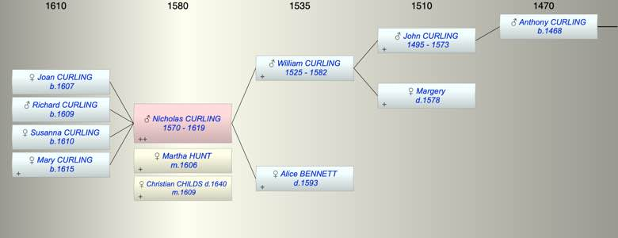

| [Index] |
| Nicholas CURLING (1570 - 1619) |
|  |
| b. 1570 at St Laurence |
| m. (1) 21 Jul 1606 Martha HUNT at St Peter, Thanet |
| m. (2) 04 Nov 1609 Christian CHILDS ( - 1640) at St Peter, Thanet |
| d. 1619 at St Laurence aged 49 |
| Parents: |
| William CURLING (1525 - 1582) |
| Alice BENNETT ( - 1593) |
| Siblings (6): |
| Roger CURLING (1557 - 1590) |
| Gregory CURLING (1559 - 1608) |
| William CURLING (1561 - 1618) |
| Susanna CURLING (1563 - 1604) |
| Alice CURLING (1564 - 1570) |
| Anthony CURLING (1567 - 1626) |
| Children (4): |
| Joan CURLING (1607 - ) |
| Richard CURLING (1609 - ) |
| Susanna CURLING (1610 - ) |
| Mary CURLING (1615 - ) |
| Events in Nicholas CURLING (1570 - 1619)'s life | |||||
| Date | Age | Event | Place | Notes | Src |
| 1570 | Nicholas CURLING was born | St Laurence | Note 1 | ||
| 1582 | 12 | Death of father William CURLING (aged 57) | Note 2 | ||
| 1593 | 23 | Death of mother Alice BENNETT | Note 3 | ||
| 21 Jul 1606 | 36 | Married Martha HUNT | St Peter, Thanet | ex FMP PR | |
| 1607 | 37 | Birth of daughter Joan CURLING | St Laurence | Note 4 | |
| 1609 | 39 | Birth of son Richard CURLING | St Laurence | Note 5 | |
| 04 Nov 1609 | 39 | Married Christian CHILDS | St Peter, Thanet | Ex FMP PR | |
| 1610 | 40 | Birth of daughter Susanna CURLING | St Laurence | Note 6 | |
| 1615 | 45 | Birth of daughter Mary CURLING | St Laurence | Note 7 | |
| 1619 | 49 | Nicholas CURLING died | St Laurence | buried 19 Apr 1619 ex FMP PR | |
| Death of wife Martha HUNT | not found | ||||
| Personal Notes: |
| Made a will 15 Jul 1594 naming his brothers and sisters and Edward, son of his brother Roger (not admitted to probate). He made another will dated 17 Mar 1617/18 proved 19 May 1619 with Richard Allen (second husband of the widow - Elizabeth Knowler - of his brother William) and Anthony Curling, his brother, to bring up his children Richard and Joan, his wife Christian to bring up Susan and Mary. |
| Created on a Mac™ using iFamily for Mac™ on 8 Oct 2023 |